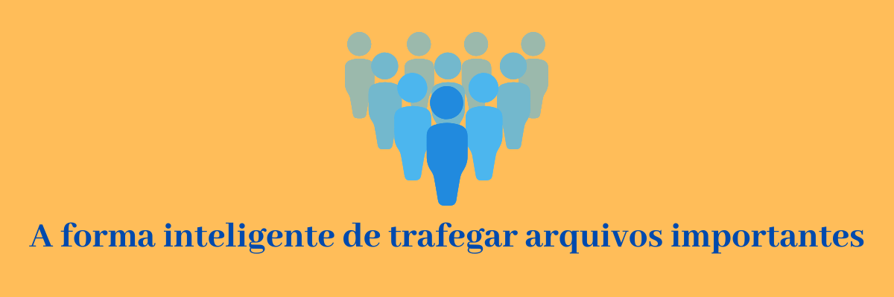

Transforme seus textos em códigos impossíveis de ser lidos
Um pequeno hábito pode evitar uma grande dor de cabeça!

Criptografia Personalizada
Como entrar em contato?
Para entrar em contato, clique no botão abaixo
Clique no botão abaixo, e veja o manual do sistema
Você encontrará as explicações sobre o funcionamento do sistema
Clique no botão abaixo, e e faça download do sistema
Você encontrará as explicações sobre o funcionamento do sistema
-Segurança total em seus arquivos,
se houver invasão, física ou remota, em seu computador,
não será possível decifrar o que foi criptografado
-Criptografe senhas
-Criptografe conversas em redes sociais
-Criptografe diários
-Criptografe emails, se interceptados, será impossível decifrar
-Criptografe suas informações financeiras
-Criptografe informações de seus clientes
-Não há limites para criptografar
-Mantenha qualquer informação sob sigilo absoluto
O que é?
O sistema Terra de Criptografia é um aplicativo personalizado, disponível para desktop e notebook, com a função específica de transformar textos legíveis em códigos ilegíveis, e impossíveis de ser decifrados.
Por que personalizado?
Ao adquirir o Sistema Terra de Criptografia, você terá um código criptográfico único, exclusivo, só você ou quem você indicar conseguirá descriptografar o que foi criptografado por você, se outra pessoa também tiver o sistema Terra Criptografia, o código criptográfico deste sistema será outro, não sendo possível descriptografar o que você criptografou.
Como funciona?
É facil, simples e intuitivo, após abrir o sistema basta fazer a digitação e clicar no botão criptografar e seu código estará ilegível, podendo ser transferido para onde você desejar, para descriptografar é só fazer o inverso e o código se tornará legível. É possível criptografar em tabelas, própria do sistema, para melhor organização dos seus trabalhos.
Como é renovada a licença
com um pagamento anualmente
Como ter o sistema?
Baixando o Sistema Terra Criptografia, você poderá testá-lo por sete dias. Após este período o sistema exibirá uma mensagem onde aparecerá um código de 4 números, e sua senha atual não será mais válida. Caso você deseje adquiri-lo, entre em contato pelos canais disponíveis, fornecendo o código de 4 números, e seguindo as instruções para pagamento. Após recebermos a confirmação do pagamento, enviaremos orientações para o desbloqueio do sistema.
Quanto custa?
R$ 69,90/ano.
Em quantos computadores posso usar o mesmo sistema?
Uma licença do sistema Terra Criptografia é válida somente para um computador.
Posso ter a mesma criptografia em vários computadores?
Sim, não há limite, mas cada programa correspoderá a uma licença.
Saiba mais na pergunta: "Como fornecer a mesma criptografia para uma pessoa ou a um grupo de pessoas?"
Como baixar?
Clique em Dowload nesta página
Depois de baixar, o que faço?
Dê dois cliques no icone baixado e a instalação começará
Como encontrar, em meu computador, o programa que baixei?
A menos que o destino de arquivamento dos downloads tenha sido alterado, normalmente tudo que é baixado no computador é colocado na pasta 'Downloads', para localizar esta pasta em seu computador(Windows e Linux), acesse 'Meu computador', a pasta de download será exibida, dê um duplo clique para abrí-la.
Para saber onde seu computador está fazendo downloads, clique abaixo, no navegador correspondente ao que você usa, e siga o caminho:
Chrome
Clique no menu com ícone de pontos no canto superior direito, clique em 'Configurações', role a página para baixo, clique em 'Avançado', procure por 'Downloads'. Agora, você pode escolher a pasta padrão de downloads ou optar por ter que selecionar o destino sempre que um arquivo for baixado, sugerimos que caso você não saiba o que está fazendo, não altere nada. Entre em contato que ajudaremos você.
Edge
Clique no menu com ícone de pontos no canto superior direito, clique em 'Configurações', no lado esquerdo da página, abrirá um menu de opções, clique em Downloads. Agora, você pode escolher a pasta padrão de downloads ou optar por ter que selecionar o destino sempre que um arquivo for baixado, sugerimos que caso você não saiba o que está fazendo, não altere nada. Entre em contato que ajudaremos você.
Firefox
Clique no menu hamburger(três barras), no canto superior direito, clique em 'Opções', role para baixo até 'Downloads'. Agora, você pode escolher a pasta padrão de downloads ou optar por ter que selecionar o destino sempre que um arquivo for baixado, sugerimos que caso você não saiba o que está fazendo, não altere nada. Entre em contato que ajudaremos você.
Opera
Clique no menu hamburger(três barras), no canto superior direito, role para baixo até o fim, clique em 'ir para configuraçõers completas no navegador', no lado esquerdo da página que abrirá, clique em 'Avançado' e em 'Recursos' role para baixo na parte central da página até encontrar 'Downloads'. Agora, você pode escolher a pasta padrão de downloads ou optar por ter que selecionar o destino sempre que um arquivo for baixado, sugerimos que caso você não saiba o que está fazendo, não altere nada. Entre em contato que ajudaremos você.
Haverá atualizações automáticas?
Não, o sistema não será atualizado. Por medida de segurança, e para garantir seu anonimato, não haverá nenhum tipo de contato remoto.
Posso manter o sistema em um pendrive?
Sim. Esta é a forma mais segura de utilizar o sistema, clique no botão abaixo, e saiba mais.
Saber mais sobre instalação no pendrive ou hd externa
Após baixar o programa, intruduza o pendrive ou hd externa, na entrada usb de seu computador. Execute o programa que você baixou, quando o sistema perguntar onde você deseja instalar o programa, 'clique em alterar pasta de destino', percorra o caminho ('Meu computador' ↳ 'seu pendrive ou hd externa') que você conectou, clique em next(próximo) e siga normalmente a instalação.
Se por qualquer razão eu perder meu sistema, posso adquirir a mesma criptografia?
Sim, mas e necessário que você tenha o CIC(Código de Identificaçao Criptográfica), caso contrário não será possível enviar a mesma criptografia. Salientamos que, só o seu sistema contém este código, se você formou uma rede de criptografia com outras pessoas, nenhum de seus afiliados tem este código, por isso, é importante que ao começar a utilizar o programa, você guarde o cic em lugar seguro, fora do seu computador e não criptografado.
Obs. O CIC é facilmente visualizado clicando no botão CIC do seu sistema.
Como fornecer a mesma criptografia para uma pessoa ou a um grupo de pessoas?
Clique no botão CIC, na página principal do sistema, será exibido o código de identificação criptografica, clique em copiar. Clique no botão Contato, você será direcionado para uma página da web, onde encontrará nosso(s) contato(s). Entre em contato fornecendo o cic, use preferencialmente copiar e colar para fornecer o cic, não insira manualmente. Criaremos um sistema com a mesma criptografia que a sua, e a disponibilizaremos atravéz de um link, este link poderá ser fornecido a quem você desejar pelo prazo de 3 dias. Chamamos você de administrador e as pessoas a quem você fornecer o link de afiliados, clicando no link, será feito o download do sistema, os procedimentos para instalação são os mesmos do seu sistema.
Obs. O CIC e o botão Contato são facilmente visualizados clicando no botão CIC na tela principal do seu sistema.